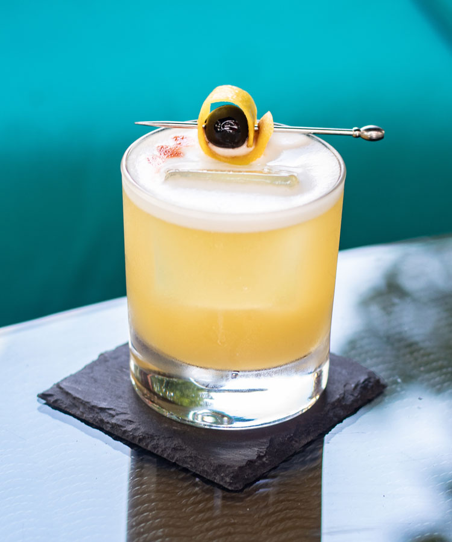

Whiskey Sour

The whiskey sour is a simple but delicious cocktail
that is perfect for any occasion. It is refreshing,
tart, and boozy all at the same time. The egg white
adds a touch of richness and texture, but it is not
necessary.
The whiskey sour is a classic cocktail that has been around
for centuries. It is made with whiskey, lemon juice,
sugar, and egg white (optional). The first known mention
of the whiskey sour was in 1862 in Jerry Thomas's
"Bartender's Guide." However, it is likely that the drink
was invented much earlier, perhaps by sailors who were
looking for a way to combine whiskey with citrus fruits
to prevent scurvy.
Ingredients
- 2 ounces whiskey
- 1 ounce lemon juice
- 1 ounce simple syrup
- 1 egg white (optional)
Steps
- Combine all ingredients in a shaker with ice.
- Shake vigorously until well-chilled
- Strain into a chilled glass
- Garnish with a lemon twist
- Enjoy!